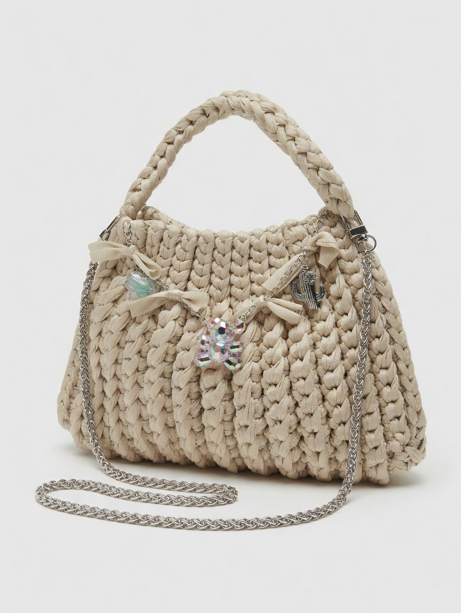
Hecho a mano
Cada puntada se trabaja con tiempo, textura y cuidado real.
Edicion limitada
No fabricamos en serie: cada prenda tiene una presencia unica.
Zero waste
Materiales naturales, reciclados y produccion bajo pedido.
Categorias
Categorias reales TRICOTRA
Una seleccion ordenada de las familias principales para explorar el universo crochet de la marca.
CardiganChaquetas tejidas a mano con textura.
TopsPiezas ligeras, coloridas y protagonistas.
JerseysPrendas suaves para looks de temporada.
FaldasSiluetas artesanales con movimiento.
Chales y cuellosCapas de crochet para completar el look.
PonchosVolumen, abrigo y punto artesanal.
BolsosAccesorios con color y caracter propio.
ComplementosDetalles especiales hechos a mano.
GorrosBalaclavas y piezas de invierno.
CalzadoPropuestas artesanales para completar estilismos.
Outlet CrochetUltimas oportunidades y piezas seleccionadas.
VestidosCrochet para verano, eventos y noches especiales.
Pantalones y shortPrendas relajadas con identidad TRICOTRA.
Bikinis y trajes de banoModa de bano con textura artesanal.
CamisetasBasicos con mensaje, color y personalidad.
Ritual
Coleccion capsula en algodon organico
Una propuesta de crochet con alma mediterranea: tops, vestidos, chales y bolsos pensados para noches especiales, verano lento y looks con mucha personalidad.
Descubrir la seleccion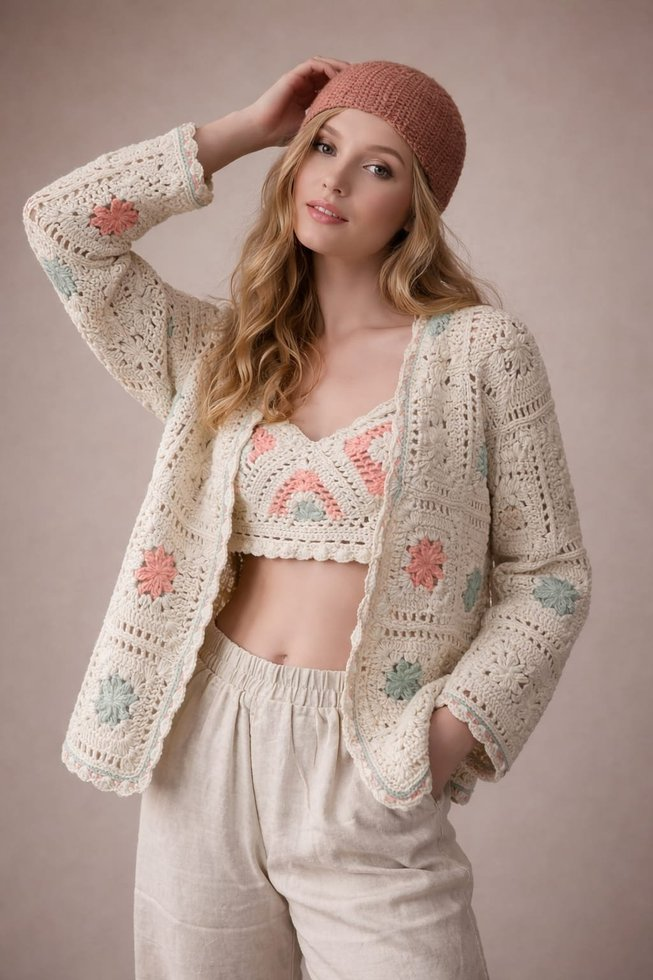
Colecciones TRICOTRA
Colecciones Tricotra
Capsulas reales de la marca, integradas en el mismo estilo visual de la web actual.
Noches de Menta y Frambuesa
Color fresco, contraste y piezas con energia de verano.
Destellos
Brillos, textura y prendas especiales para destacar.
Alpacrochet
Suavidad, abrigo y materiales nobles en clave crochet.
Alma Rustica
Tonos naturales y una estetica artesanal muy mediterranea.
Vibranza en Hilos
Hilos vivos, color y mezclas llenas de personalidad.
Pitiusa
Inspiracion ibicenca para looks ligeros y luminosos.
Tramas de Abuela
Tradicion reinterpretada con patrones contemporaneos.
Soulenco
Una coleccion expresiva con raiz, textura y movimiento.
Eclectica
Mezcla libre de color, formas y piezas unicas.
Verdelina
Verdes, frescura y prendas con presencia natural.
Bolsos
Accesorios artesanales pensados como pieza protagonista.
Camisetas Latido
Mensajes, identidad y prendas faciles de combinar.
Lumina
Luz, delicadeza y crochet para ocasiones especiales.
Ritual
Motivos florales, algodon y una estetica muy TRICOTRA.
Escaparate
Productos destacados de Tricotra
Seleccion provisional con nombres reales. Las fotos finales se podran sustituir cuando la marca entregue el catalogo ordenado.
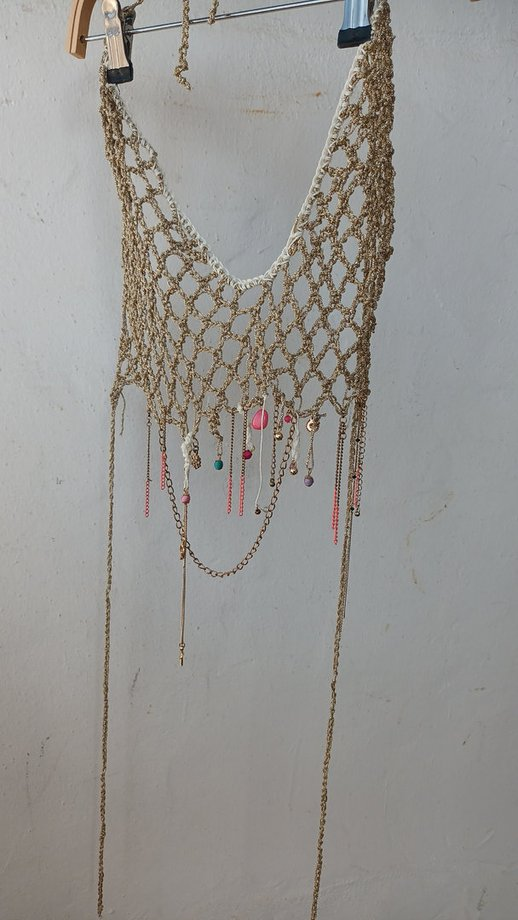
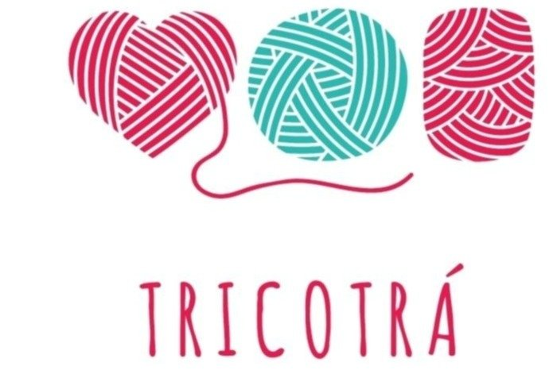
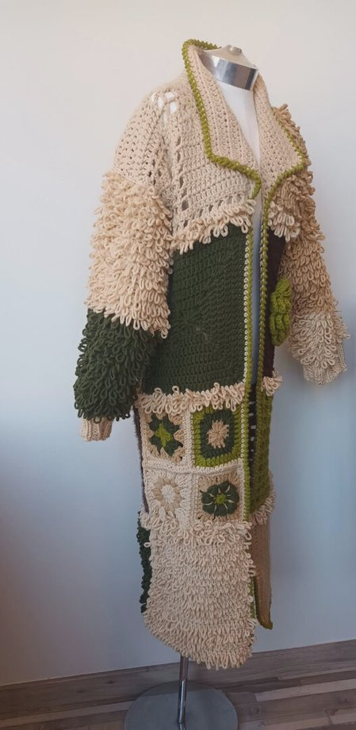
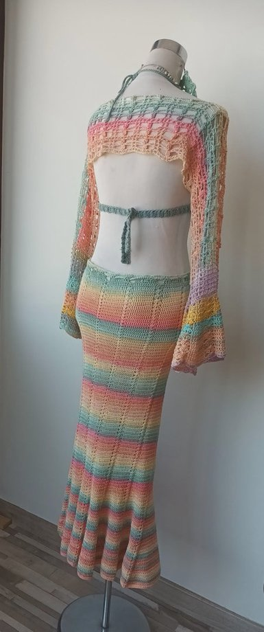
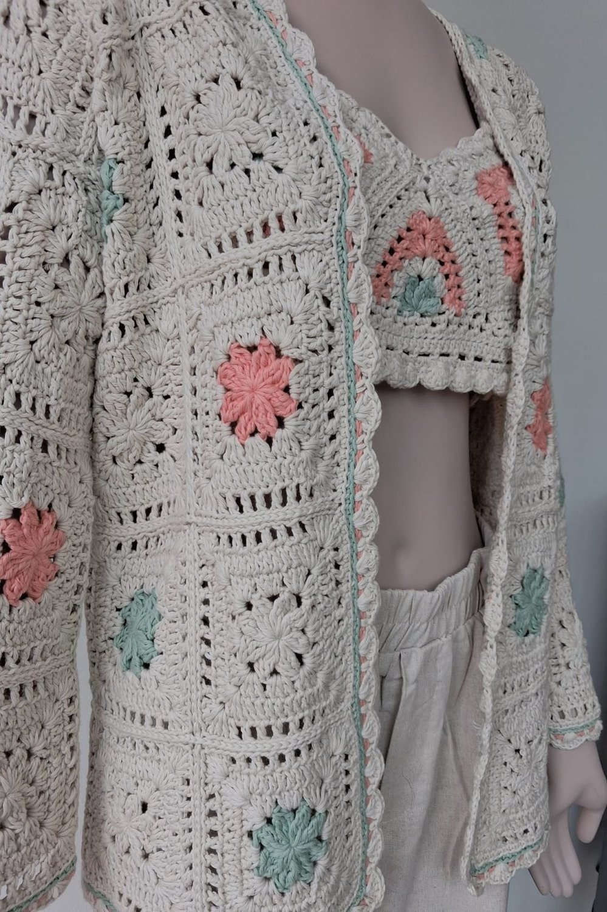
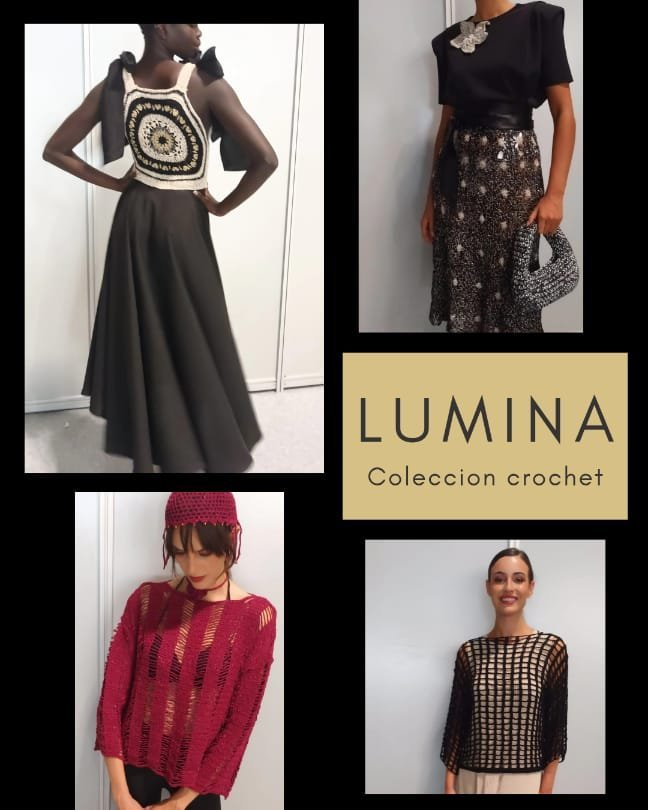

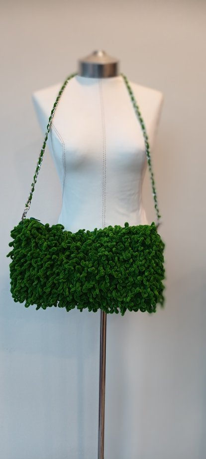
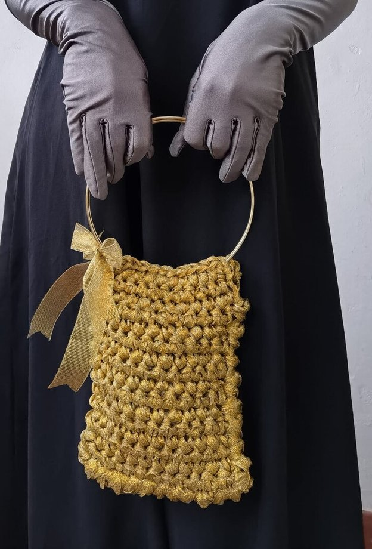
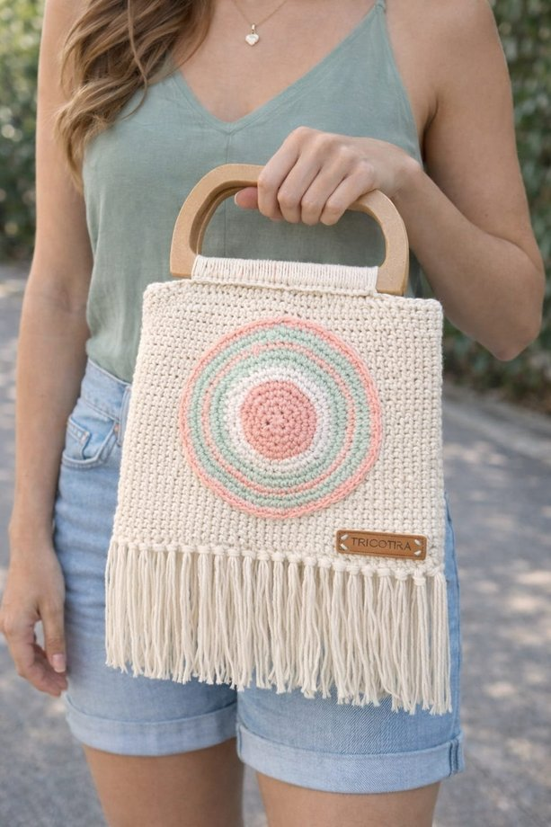
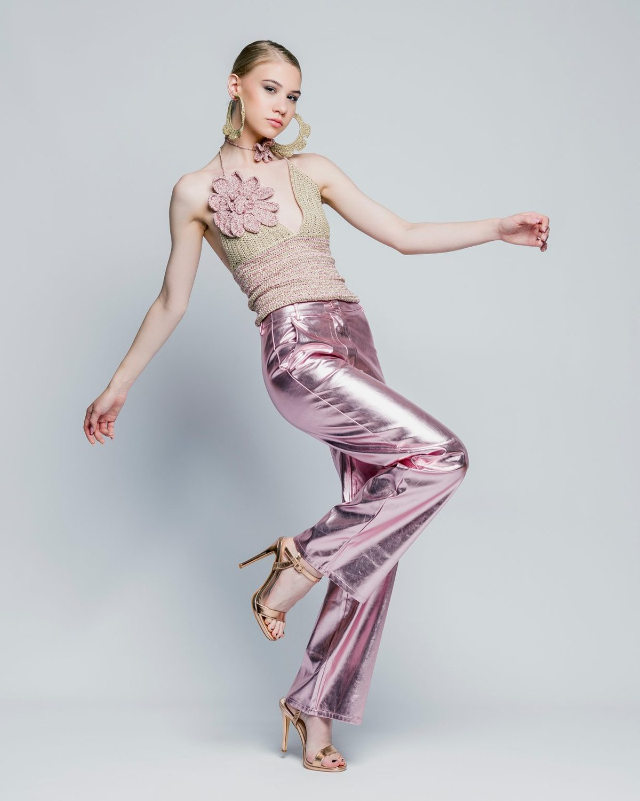


Ropa complementaria
Capas, mangas y detalles que transforman el look
Prendas ligeras, combinables y especiales para completar vestidos, tops y looks de noche sin perder comodidad.
Ver prendasBolsos TRICOTRA
Color, volumen y crochet para llevar en la mano
Desde bolsos de fiesta hasta totes con textura: accesorios protagonistas hechos en series pequenas.
Ver bolsosPiezas unicas para mujeres unicas
Lo importante no es solo como te queda. Es como te hace sentir.
¿Tienes una tienda?
Una seleccion artesanal para boutiques con personalidad
Creamos piezas para tiendas que buscan producto especial, diferente y con historia. Trabajamos pequenas cantidades, encargos de color y colecciones pensadas para escaparates con alma.
Solicitar catalogoAtelier crochet
Disenos propios, personalizados y con menos desperdicio
TRICOTRA trabaja con lanas, algodones, linos, sedas e hilos regenerados. La marca mezcla generos, ama el color y crea prendas con glamour, delicadeza y mucha identidad.
- Asesoria de talla antes de finalizar el pedido.
- Produccion limitada para evitar excedentes.
- Encargos especiales para tiendas y clientas privadas.
Conocenos
Por que elegir TRICOTRA
La pagina original habla de exclusividad, sostenibilidad, comodidad y proceso artesanal. Aqui lo convertimos en una experiencia clara para comprar con confianza.
Exclusividad
No hay dos piezas exactamente iguales. Cada prenda mantiene el valor de lo hecho a mano.
Sostenibilidad
Produccion consciente, materiales seleccionados y una filosofia de menos excedente.
Comodidad y estilo
Crochet suave, ligero y adaptable para distintas estaciones y ocasiones.
Proceso cuidado
Diseno, eleccion de materiales, tejido, control de calidad y acabado final.
Blog
Historias de hilos, color y estilo consciente
Como cuidar tus prendas de crochet
Ideas para combinar bolsos artesanales
El valor de una pieza hecha bajo pedido
@tricotra.moda
Inspiracion real para una tienda viva
Galeria provisional de demo con imagenes de colecciones Tricotra. Cuando tengamos el material final, esta zona se puede convertir en feed real, campanas o novedades.